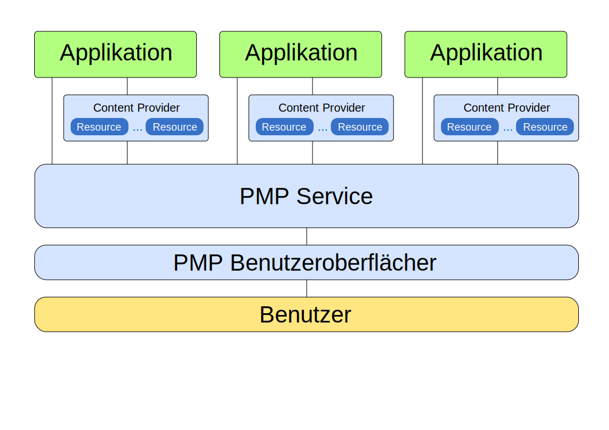
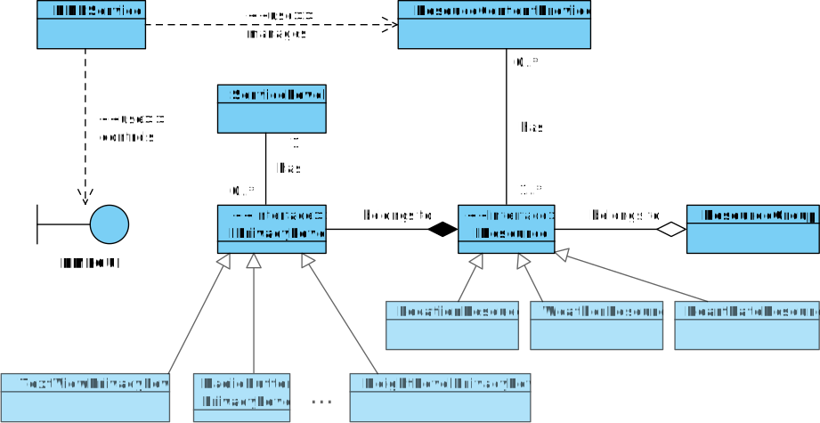

Versionshistorie
Version 1.0 (19.08.2011)
- Erstes Gerüst der Entwurfsvorlage
Einleitung
Zweck
[Dieses Dokument stellt die Spezifikation des Projektes "Privacy Management Platform" dar. Es summiert die Ergebnisse der Analyse und repräsentiert die Grundlage für die spätere Entwicklung in einer Iteration. Es ist daher eine vertragliche Grundlage für Kunde und Entwickler, um die zu entstehende Software und ihre Funktionalität so ausführlich und vollständig wie möglich zu beschreiben, damit die weitere Entwicklung stets auf dieses Dokument zurückgreifen kann.
Die Spezifikation definiert dabei einen grafischen Prototypen für die spätere Benutzeroberfläche, beschreibt die gewünschten Funktionsabläufe und definiert im Begriffslexikon die Bedeutung von speziellen Begriffen, die in der Arbeitsumgebung verwendet werden. Da auch Begriffe neu definiert werden, um die Software möglichst knapp und für alle eindeutig zu beschreiben, empfiehlt es sich zunächst, einen Blick in das Begriffslexikon zu werfen und die Beschreibung vermeintlich klarer Begriffe dort nachzulesen.]
Projektüberblick & Motivation
[Die rasche Entwicklung in der Kommunikationsindustrie mit ihren unzähligen Möglichkeiten übersteigt die heutige Konfigurationssoftware. Nicht jeder kennt alle Anwendungen auf seinem Smartphone, ganz davon abgesehen welche Rechte die einzelnen Programme besitzen, ob diese auf den Internetanschluss zugreifen oder sogar Ihre E-Mails weiterleiten.
Im Rahmen des Studienprojekts "Privacy Management Platform" kurz "PMP" an der Universität Stuttgart wird eine Software entwickelt, die dem Benutzer das sichere Benutzen eines Android-Systems erlauben könnte.
Der Benutzer wird alle Apps und Ressourcen auf dem Android-System schnell und einfach verwalten können. Mittels einer ansprechenden grafischen Bedienungsoberfläche wird es möglich sein jeder einzelnen Anwendung, die mit PMP kompatibel ist, bestimmte Rechte zuzuweisen bzw. diese zu entziehen.]
Leserkreis
[Diese Spezifikation dient als zentrales Dokument für die folgenden Lesergruppen:
- den Entwicklern von PMP
- den Entwicklern von Androidapps bzw. zur PMP kompatiblen Ressourcen
- dem Kunden
- dem Betreuern des Studienprojekts]
Konventionen
In diesem Dokument werden mehrere Konventionen verwendet, um knapp, übersichtlich, lesbar und treffend zu sein:
- Für Überbegriffe wie Benutzer oder Entwickler wird das generische Maskulinum verwendet. Da die Deutsche Sprache hier keine zufriedenstellende Alternative kennt, sind damit selbstverständlich auch alle weiblichen Leserinnen angesprochen.
- In diesem Dokument wird die deutsche Sprache verwendet; dabei ist allerdings zu beachten, dass sich übernommene oder übersetzte Begriffe aus dem Englischen nicht vermeiden lassen. Diese werden dann jedoch grammatikalisch an die Deutsche Sprache angepasst.
- Ein Verweis in diesem Dokument auf andere Kapitel wird so dargestellt:
- Die Versionsnummern sind nach dem Schema aufgebaut, dass zuerst die Iterationsnummer genannt wird und anschließend die Versionsnummer der Spezifikation in dieser Iteration. "3.2" bezeichnet z.B. die 2. Version der Spezifikation für die 3. Iteration.
Systemarchitektur
Systemarchitekturdiagramm
Wenn einmal gestartet wurde, läuft der PMP-Service (ein Android Service) im Hintergrund und ist für andere Applikationen immer verfügbar, bis er vom Benutzer beendet oder durch andere Prozesse unterbrochen wird. Die Interaktion zwischen dem Benutzer und dem PMP-Service kann durch die PMP-Benutzeroberfläche (Android Activities) stattfinden. Mit seinem eigenen Broadcast-Receiver kann der PMP-Service Anfragen anderer Applikationen bekommen, die Resourcen von PMP benutzen möchten. Nach der Authentifizierung und der Prüfung von Service Level liefert der PMP-Service den Applikationen die URIs der geeigneten Content-Providers zurück, von denen die Applikationen Resoucendaten bekommen, was sie vom Benutzer berechtigt wurden. Wenn der Benutzer die Service Level für eine Applikation anpasst, der PMP-Service kann die Privacy Levels der Resourcen des geeigneten Content-Providers ändern, neue Ressourcen hinzufügen und die alte sperren, wenn es benötigt ist. Natürlich kann dies die Applikation selbst nicht machen.
Der PMP-Service kann weiterhin mit den Applikationen interagieren, um sie rechtzeitig zu benachrichtigen, wenn ihre Privacy Level sich ändert, oder um informiert zu werden, wenn die Applikation beendet.
Klassendiagramme
Übersicht
Die Übersicht der Systemarchitektur spiegelt die Fähigkeit zur Erweiterung des Systems durch Implementierung von neuen Resoucen und deren Privacy-Levels ab. In der ersten Iteration des PMPs werden fünf Resourcenimplementierungen implementiert. Einige fundamentale Privacy-Levels, die durch einfache graphische Oberflächenelemente wie z.B. TextView, RadioButton, CheckBox, ComboBox, ToggleButton, DatePicker, TimePicker... darstellen lassen können, werden auch in dieser Iteration Verfügung gestellt.
Privacy Level
Blah